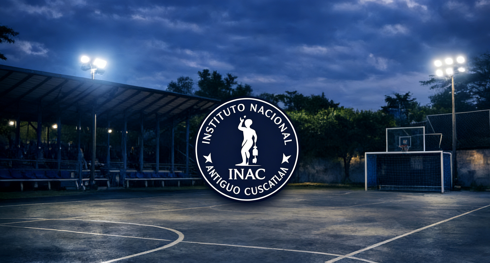
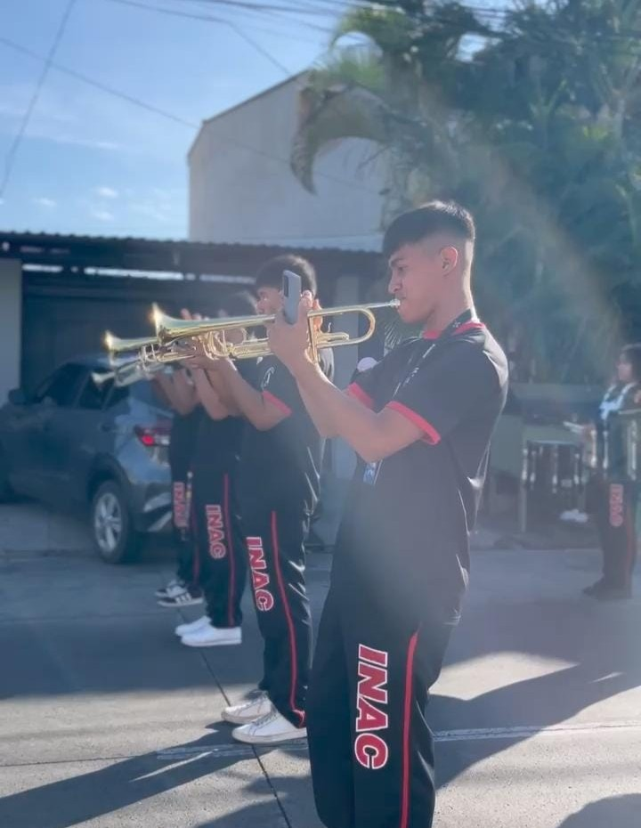

Actividades Culturales
Este apartado esta dividida en diferentes secciones, las cuales estan espesificadas en en este espacio
Ensayos de Baile
Los ensayos folkloricos que ase la Maestra de folklor por las tardes.
Los bailes para la semana civica que solo se realizan actos y ahi se incluyen bailes. hay veces que se asen o otros dias no se hacen bailes pero siempre la mayoria de veces balan para dar a demostrar lo que an aprendido en sus tiempos que ensayan
Hay veces que jovenes y jovencitas se quedan a ensayos de folklor de 1:00 p.m. a 2:30 p.m. o hay veces que hasta las 3:00 p.m. dedicando ese tiempo al poder hacer bien las cosas para los dias indicados. Hay veces que jovenes y jovencitas se quedan a ensayos de folklor de 1:00 p.m. a 2:30 p.m. o hay veces que hasta las 3:00 p.m. dedicando ese tiempo al poder hacer bien las cosas para los dias indicados.

Ensayos de Banda
Con la banda de paz se puede decir que se ensayan ciertos dias y se hacen a la hora del almuerzo de 12:00 p.m. a 1:00 p.m. ya que eso lo demuestran los dias que nos invitan a tocar a otro lado para poder hacer y sacar todo nuestro potencial que hemos ensayado durante tiempo tambien se puede hablar para el 15 de Septiembre ahi junto a nuestras cachiporras tocamos mas de 10 canciones para que junto a las cachiporras las personas al alrededor se diviertan escuchando, viendo o incluso grabando todo nuestro esfuerzo realizado esa dedicacion que hay veces que sin comer los hacemos horas ensayado aveces y aveces no pero siempre todo para deleitar.
Charlas de fundeso y actividades
No hace mucho tiempo la clinica integral de antiguo cuscatlan << Fundeso >> llego a nuestro instituto a impartir jornadas de salud mental, en el que se ejecutaron diferetes tipos de dinamicas en las que los estudiantes interactuaban y participaban con los impartidores y contribuian y participaban en juegos, pequeños examenes, actividades de escritura, clarlas informativa, etc. En general èsta institucion inpartio almenos 6 jornadas durante un mes las cuales beneficiaron de forma positiva a los alumnos. todo esto con un solo objetivo formar a los estudiantes para que sepan controlar sus emociones, expresarlas de forma correcta y respetuosa ante los demas.
Comites institucionales !
El instituto tambien cuenta con difentes comites en los que estan organizados todos los alumnos, estos comites son fundamentales porque ayudan en diferentes ambitos a toda la institucion en general, principalmente en la organizacion de eventos, recicleje y sonido
Estos con el fin de proporcional una pequeña ayuda a de parte de los alumnos hacia a la institucion, ya que al hacerlo el instituto tiene un mejor funcionamiento para los docentes y los alumnos. Agragando que cada docente de la nstitucion se encarga de comites espesificos y es fundamental porque los alumnos deben cumplir sierto numero de horas sociales en el año y los comites son una de las fomas de completarlas.
Comite de Reciclaje !
Este comite tiene como fin de proporcionar reciclaje de elementos desachables tales como bootellas y latas de refresco, como punto principal cada fin de mes los alumnos que esten en este comite tienen la obrigacion y responsabilidad de traer este tipo de materiales a la institucion, una vez los hayan transportado, se les contaran su horas sociales dependiendo de cuantos elementos lleven.
Comite de Sonido !
Este comite esta especializado en la preparacion de los efectos de sonido en la institucion, especiamente cuando se organizan eventos, uno de los eventos mas recurrentes son los actos civicos que se organizan cada lunes de cada semana, en ese dia los alumnos se preparan des buena horas de la mañana para a preparacion de los sonidos que se utilizaran para poder cunicar los diferentes temas a presentar. /p>
Comite de Protocolo !
Uno de los comites que probablemente mas resaltan, ya que todos los alumnos perteneciantes a este comite tienes la obligacion de organizar un poco mas aprofundidad los eventos dentro de la intitucion, ya que por ejemplo cada vez que hay un una reunion de padres o cualquier tipo de evento, los alumnos estan en la obligacion de la preparacion de pequeños de detalles un dia antes del evento, un ejemplo claro son las reuniones de padres, porque ademas de la preparacion de todos los ultimos detalles, los alumnos tienen que estar a buena hora de la mañana del evento tomando y regitrando cada padre de fammilia que entra y asite a la institucion para dicha reunion.
Inportancia
Estos son importantes ya que ademas que los alumnos se comprometen a completar estos comites, les enseñan que a todos ellos el valor de la responsabilidad de cumplir con todo esto de manera anticipada.